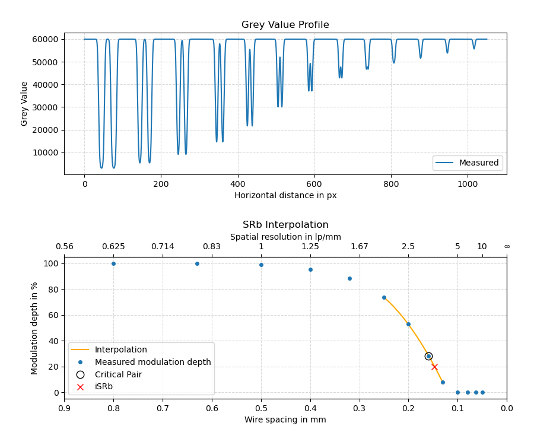

Module ctsimu.evaluation.test2D_DW_1
Test 2D-DW-1: Detector unsharpness
This test employs a sample of duplex wires (DIN EN 462-5 or ISO 19232-5) to check if the required basic spatial resolution (SRb) is simulated correctly. It uses the technique presented in ASTM E2002-15 to calculate the interpolated basic spatial resolution (iSRb) using a line profile across the duplex wires sample.
This scenario defines two subtests: one with a basic spatial resolution of SRb,1 = 75 μm, and a second one with SRb,2 = 150 μm. The following code example shows how to identify each sub-test correctly when using the toolbox with metadata files to run the evaluation.
from ctsimu.toolbox import Toolbox
Toolbox("2D-DW-1",
SR75 = "2D-DW-1_75um_metadata.json",
SR150 = "2D-DW-1_150um_metadata.json"
)
A line profile is measured perpendicular to the duplex wires at a tilt angle of 3°, with a line width of w = 20 px and a resolution of r = 0.1 px. The profile has a length of l = 1050 px; its start and end point are given and illustrated in the following picture.
The evaluation follows the procedure described in ASTM E2002-15 to calculate the interpolated basic spatial resolution (iSRb). The modulation depth is measured for each wire pair, defined as the ratio of the height of its central peak above the two dips to the depth of its dips against the background intensity. For the interpolation, a quadratic function is fit to the last point that has a modulation depth of more than 20% and its neighborhood of nearest and next-nearest neighbors, as long as they have a modulation depth of at least 1.5%.

The upper picture shows an example for a line profile across the duplex wire pairs at a simulated basic spatial resolution of SRb,2 = 150 μm for a pixel size of 50 μm.
The lower picture shows the identified modulation depths as a function of the wire spacing. The dotted line shows the quadratic interpolation function, the cross designates the interpolated iSRb = 147 μm at a modulation depth of 20%.
Classes
class Test2D_DW_1 (resultFileDirectory='.', name=None, rawOutput=False)-
Expand source code
class Test2D_DW_1(generalTest): """ CTSimU test 2D-DW-1: Detector Unsharpness. """ def __init__(self, resultFileDirectory=".", name=None, rawOutput=False): generalTest.__init__( self, testName="2D-DW-1", name=name, nExpectedRuns=2, resultFileDirectory=resultFileDirectory, rawOutput=rawOutput) # Results for each sub test: self.results = [] # ROI of imaged duplex wire: (622, 312) -- (1630, 678) duplexAngle = 3 * (math.pi/180.0) # 3 deg duplex wire rotation duplexCenter = Vector(1126, 496) # Center of duplex wire ROI self.profileLength = 1050 self.profileRes = 0.1 self.profileWidth = 20 duplexDirection = Vector(self.profileLength/2, 0) # points "right" duplexDirection.rotate_2D_xy(duplexAngle) # Rotate by angle of duplex wire arrangement self.p0 = duplexCenter - duplexDirection self.p1 = duplexCenter + duplexDirection self.currentNominalSRb = 0 self.currentPixelSize = 0 self.currentSDD = 0 self.currentSOD = 0 def prepare(self): """ Preparations before the test will be run with the images from the pipeline. """ self.prepared = True def prepareRun(self, i): if i < len(self.subtests): self.jsonScenarioFile = "2D-DW-1_Detektor1_2021-05-26v01r01dp.json" if self.subtests[i] == "SR150": self.jsonScenarioFile = "2D-DW-1_Detektor2_2021-05-26v01r01dp.json" if self.jsonScenarioFile is not None: scenario = Scenario(json_dict=json_from_pkg(pkg_scenario(self.jsonScenarioFile))) self.currentNominalSRb = scenario.detector.unsharpness.basic_spatial_resolution.get() if self.currentNominalSRb is None: raise Exception("Test {name}: Cannot find 'basic_spatial_resolution' value in JSON scenario description: {json}".format(name=self.name, json=self.jsonScenarioFile)) self.currentPixelSize = scenario.detector.pixel_pitch.u.get() if self.currentPixelSize is None: raise Exception("Test {name}: Cannot find 'pixel_pitch/u' value in JSON scenario description: {json}".format(name=self.name, json=self.jsonScenarioFile)) geo = scenario.current_geometry() geo.update() self.currentSDD = geo.SDD if self.currentSDD is None: raise Exception(f"Test {self.name}: Calculation of SDD failed.") self.currentSOD = geo.SOD if self.currentSOD is None: raise Exception(f"Test {self.name}: Calculation of SOD failed.") else: raise Exception("Test {name}: Cannot open JSON scenario description: {json}".format(name=self.name, json=self.jsonScenarioFile)) # Prepare this test run: self.prepare() self.results.append(Test2D_DW_1_results()) self.results[i].SRb_nominal = self.currentNominalSRb self.results[i].pixelSize = self.currentPixelSize self.results[i].SDD = self.currentSDD self.results[i].SOD = self.currentSOD else: if len(self.subtests) == 0: raise Exception("Please provide keywords that identify which metadata file belongs to which subtest. Test {testname} accepts two keywords: 'SR50' for 50um basic spatial resolution and 'SR100' for 100um basic spatial resolution.".format(testname=self.testName)) else: raise Exception("Number of provided image metadata files exceeds number of test runs ({expected}).".format(expected=len(self.subtests))) def writeResultFile(self, subname, results): pos = results.lineProfilePos prof = results.lineProfileGV profileText = "# Profile data\n" profileText += "# s [px]\tGV" profileText += "\n" for j in range(len(pos)): profileText += "{pos:.2f}\t{GV}".format(pos=pos[j], GV=prof[j]) profileText += "\n" profileFileName = "{dir}/{name}_{subname}_profile.txt".format(dir=self.resultFileDirectory, name=self.name, subname=subname) with open(profileFileName, 'w') as profileFile: profileFile.write(profileText) profileFile.close() resultText = "# Results\n" resultText += "# \n" resultText += "# iSRb: {:.5f} mm\n".format(results.SRb_interpolated) resultText += "# \n" resultText += "# Interpolation function: f(x) = ax²+bx+c\n" resultText += "# a: {:.5f}\n".format(results.interpolation_a) resultText += "# b: {:.5f}\n".format(results.interpolation_b) resultText += "# c: {:.5f}\n".format(results.interpolation_c) resultText += "# \n" resultText += "# Wire spacing [mm]\tModulation depth [%]\n" for j in range(len(results.wireSpacings)): resultText += "{ws:.3f}\t{md:.3f}".format(ws=results.wireSpacings[j], md=results.modulationDepths[j]) resultText += "\n" resultTextFileName = "{dir}/{name}_{subname}_results.txt".format(dir=self.resultFileDirectory, name=self.name, subname=subname) with open(resultTextFileName, 'w') as resultFile: resultFile.write(resultText) resultFile.close() def run(self, image): self.prepareRun(self.currentRun) i = self.currentRun subtestName = self.subtests[i] self.results[i].lineProfileGV, self.results[i].lineProfilePos, stepsize = image.lineProfile(x0=self.p0.x(), y0=self.p0.y(), x1=self.p1.x(), y1=self.p1.y(), width=self.profileWidth, resolution=self.profileRes) print("Pixel Size: {}, SOD: {}, SDD: {}".format(self.currentPixelSize, self.currentSOD, self.currentSDD)) # Use Bendix' iSRb tool to evaluate the basic spatial resolution tool = Interpolation(im=image.px, pixelsize=self.currentPixelSize, SOD=self.currentSOD, SDD=self.currentSDD, wire_length=15, wire_spacing=[0.8, 0.63, 0.5, 0.4, 0.32, 0.25, 0.2, 0.16, 0.13, 0.1, 0.08, 0.063, 0.05]) # The line profile has already been measured. Provide it to the tool: tool.measure = self.results[i].lineProfileGV tool.ind = self.results[i].lineProfilePos tool.calc_dips(prominence=100) tool.interpolate() if tool.dip20 is not None: self.results[i].SRb_interpolated = tool.dip20 else: self.results[i].SRb_interpolated = 0 print("iSRb: {:.5f} mm".format(self.results[i].SRb_interpolated)) self.results[i].criticalIndex = tool.criticalIndex self.results[i].wireSpacings = tool.wire_spacing self.results[i].modulationDepths = tool.dips[0:len(tool.wire_spacing)] self.results[i].interpolation_wireSpacings = tool.inter[0] self.results[i].interpolation_modulationDepths = tool.inter[1] self.results[i].interpolation_a = tool.a self.results[i].interpolation_b = tool.b self.results[i].interpolation_c = tool.c self.writeResultFile(subtestName, self.results[i]) self.plotResults() self.currentRun += 1 return image def followUp(self): pass def plotResults(self): i = self.currentRun subtestName = self.subtests[i] try: import matplotlib import matplotlib.pyplot from matplotlib.ticker import (MultipleLocator, FormatStrFormatter, AutoMinorLocator) matplotlib.use("agg") fig, (ax1, ax2) = matplotlib.pyplot.subplots(nrows=2, ncols=1, figsize=(9, 7.5)) # Grey Value Profile: ax1.plot(self.results[i].lineProfilePos, self.results[i].lineProfileGV, linewidth=1.5, label="Measured", color='#1f77b4') ax1.set_xlabel("Horizontal distance in px") ax1.set_ylabel("Grey Value") #ax1.set_xlim([-3*self.results[i].nominalGaussianSigmaPX, 3*self.results[i].nominalGaussianSigmaPX]) ax1.set_title("Grey Value Profile") #ax1.xaxis.set_ticklabels([]) ax1.grid(visible=True, which='major', axis='both', color='#d9d9d9', linestyle='dashed') ax1.grid(visible=True, which='minor', axis='both', color='#e7e7e7', linestyle='dotted') ax1.legend(loc='best') # Contrast vs. Wire Spacing ax2.plot(self.results[i].interpolation_wireSpacings, self.results[i].interpolation_modulationDepths, linewidth=1.5, label="Interpolation", color='#ffaa00') ax2.plot(self.results[i].wireSpacings, self.results[i].modulationDepths, 'o', markersize=4.0, label="Measured modulation depth", color='#1f77b4') if self.results[i].criticalIndex is not None: ci = self.results[i].criticalIndex ax2.plot(self.results[i].wireSpacings[ci], self.results[i].modulationDepths[ci], 'o', markersize=9.0, label="Critical Pair", markerfacecolor='none', markeredgecolor='black') ax2.plot(self.results[i].SRb_interpolated, 20, 'x', markersize=7.0, label="iSRb", color='#ff0000') ax2.set_xlabel("Wire spacing in mm") ax2.set_ylabel("Modulation depth in %") ax2.set_xlim([0.9, 0]) ax2.set_title("SRb Interpolation") #ax2.xaxis.set_ticklabels([]) ax2.grid(visible=True, which='major', axis='both', color='#d9d9d9', linestyle='dashed') ax2.grid(visible=True, which='minor', axis='both', color='#e7e7e7', linestyle='dotted') ax2.legend(loc='best') ax22 = ax2.twiny() ax22.set_xlim(ax2.get_xlim()) ax22.set_xticks(numpy.array([0.9, 0.8, 0.7, 0.6, 0.5, 0.4, 0.3, 0.2, 0.1, 0.05, 0])) ax22.set_xticklabels(["0.56", "0.625", "0.714", "0.83", "1", "1.25", "1.67", "2.5", "5", "10", "∞"]) ax22.set_xlabel("Spatial resolution in lp/mm") fig.tight_layout(pad=2.5) plotFilename = "{dir}/{name}_{subname}_results.png".format(dir=self.resultFileDirectory, name=self.name, subname=subtestName) matplotlib.pyplot.savefig(plotFilename) fig.clf() matplotlib.pyplot.close('all') except Exception as e: log(f"Warning: Error plotting results for test {self.name}, {subtestName} using matplotlib: {e}")CTSimU test 2D-DW-1: Detector Unsharpness.
Ancestors
Methods
def prepare(self)-
Expand source code
def prepare(self): """ Preparations before the test will be run with the images from the pipeline. """ self.prepared = TruePreparations before the test will be run with the images from the pipeline.
def prepareRun(self, i)-
Expand source code
def prepareRun(self, i): if i < len(self.subtests): self.jsonScenarioFile = "2D-DW-1_Detektor1_2021-05-26v01r01dp.json" if self.subtests[i] == "SR150": self.jsonScenarioFile = "2D-DW-1_Detektor2_2021-05-26v01r01dp.json" if self.jsonScenarioFile is not None: scenario = Scenario(json_dict=json_from_pkg(pkg_scenario(self.jsonScenarioFile))) self.currentNominalSRb = scenario.detector.unsharpness.basic_spatial_resolution.get() if self.currentNominalSRb is None: raise Exception("Test {name}: Cannot find 'basic_spatial_resolution' value in JSON scenario description: {json}".format(name=self.name, json=self.jsonScenarioFile)) self.currentPixelSize = scenario.detector.pixel_pitch.u.get() if self.currentPixelSize is None: raise Exception("Test {name}: Cannot find 'pixel_pitch/u' value in JSON scenario description: {json}".format(name=self.name, json=self.jsonScenarioFile)) geo = scenario.current_geometry() geo.update() self.currentSDD = geo.SDD if self.currentSDD is None: raise Exception(f"Test {self.name}: Calculation of SDD failed.") self.currentSOD = geo.SOD if self.currentSOD is None: raise Exception(f"Test {self.name}: Calculation of SOD failed.") else: raise Exception("Test {name}: Cannot open JSON scenario description: {json}".format(name=self.name, json=self.jsonScenarioFile)) # Prepare this test run: self.prepare() self.results.append(Test2D_DW_1_results()) self.results[i].SRb_nominal = self.currentNominalSRb self.results[i].pixelSize = self.currentPixelSize self.results[i].SDD = self.currentSDD self.results[i].SOD = self.currentSOD else: if len(self.subtests) == 0: raise Exception("Please provide keywords that identify which metadata file belongs to which subtest. Test {testname} accepts two keywords: 'SR50' for 50um basic spatial resolution and 'SR100' for 100um basic spatial resolution.".format(testname=self.testName)) else: raise Exception("Number of provided image metadata files exceeds number of test runs ({expected}).".format(expected=len(self.subtests))) def writeResultFile(self, subname, results)-
Expand source code
def writeResultFile(self, subname, results): pos = results.lineProfilePos prof = results.lineProfileGV profileText = "# Profile data\n" profileText += "# s [px]\tGV" profileText += "\n" for j in range(len(pos)): profileText += "{pos:.2f}\t{GV}".format(pos=pos[j], GV=prof[j]) profileText += "\n" profileFileName = "{dir}/{name}_{subname}_profile.txt".format(dir=self.resultFileDirectory, name=self.name, subname=subname) with open(profileFileName, 'w') as profileFile: profileFile.write(profileText) profileFile.close() resultText = "# Results\n" resultText += "# \n" resultText += "# iSRb: {:.5f} mm\n".format(results.SRb_interpolated) resultText += "# \n" resultText += "# Interpolation function: f(x) = ax²+bx+c\n" resultText += "# a: {:.5f}\n".format(results.interpolation_a) resultText += "# b: {:.5f}\n".format(results.interpolation_b) resultText += "# c: {:.5f}\n".format(results.interpolation_c) resultText += "# \n" resultText += "# Wire spacing [mm]\tModulation depth [%]\n" for j in range(len(results.wireSpacings)): resultText += "{ws:.3f}\t{md:.3f}".format(ws=results.wireSpacings[j], md=results.modulationDepths[j]) resultText += "\n" resultTextFileName = "{dir}/{name}_{subname}_results.txt".format(dir=self.resultFileDirectory, name=self.name, subname=subname) with open(resultTextFileName, 'w') as resultFile: resultFile.write(resultText) resultFile.close()
Inherited members
class Test2D_DW_1_results-
Expand source code
class Test2D_DW_1_results: """ Results for one sub-test. """ def __init__(self): self.lineProfileGV = None # Profile positions self.lineProfilePos = None # Profile values # For the modulation depth vs. wire spacing diagram: self.wireSpacings = None self.modulationDepths = None self.interpolation_wireSpacings = None self.interpolation_modulationDepths = None self.interpolation_a = 0 self.interpolation_b = 0 self.interpolation_c = 0 self.pixelSize = None self.SDD = None self.SOD = None self.criticalIndex = None # Last wire pair with dip > 20%. self.SRb_nominal = None self.SRb_interpolated = NoneResults for one sub-test.